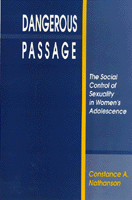

<body bgcolor="#FFFFFF" text="#000000" link="#0000FF" vlink="#CC0000" alink="#CC0000"><center><hr width="350" size="1" align="center" noshade>Adolescent pregnancy as a public policy issue<hr width="350" size="1" align="center" noshade><p><a href="https://cdcshoppingcart.uchicago.edu/Cart/ChicagoBook.aspx?ISBN=9780877228240&&PRESS=temple" target="_top">Buy this book!</a> | <a href="https://cdcshoppingcart.uchicago.edu/Cart/Cart.aspx?PRESS=temple" target="_top">View Cart</a> | <a href="https://cdcshoppingcart.uchicago.edu/Cart/Cart.aspx?PRESS=temple" target="_top">Check Out</a></p><p></p></center><!--none//--><h1>Dangerous Passage</h1>
<H2>The Social Control of Sexuality in Women's Adolescence</H2>
<h3>Constance A. Nathanson</h3>
<P>cloth 0-87722-824-8 $77.50, Jun 91, <FONT COLOR=#990033>Out of Stock Unavailable</FONT>
<br>paper 1-56639-077-X $27.95, Jan 93, <FONT COLOR=#990033>Out of Stock Unavailable</FONT>
<BR> 304 pp
</P><h3 align="center"><P><font color="#996633">Eliot Freidson Outstanding Book in Medical Sociology, American Sociological Association,
1993</font></P>
</H3>
<BLOCKQUOTE><I>"[A]n important and provocative discussion of current responses to teenage pregnancy in the United States...and it representative of the best of social problems scholarship. </I>Dangerous Passage<I> is meticulously researched, gracefully written, draws artfully on historical parallels, and in the tradition of this genre, shows the reader that a problem that has fundamentally </I>social<I> roots is nonetheless addressed&#151by all would-be 'owners'&#151at the level of individual behavior."</I>
<br>&#151<b>Carol Joffe</b>, <I>American Journal of Sociology</I><I></I></BLOCKQUOTE>
<p>Basing her work on the premise that sexuality is molded by both history and culture, Constance Nathanson analyzes the emergence of adolescent pregnancy as a public policy issue. Pregnant teenagers have received much attention from scholars, public officials, and the popular press. The author focuses on this public response: on the lay advocates, reformers, politicians, judges, physicians, professors, social workers, and journalists who have proposed solutions to the problem posed to American society by the sexuality of single adolescent women. Throughout her study, she examines how Americans think about and handle deviant behavior and social change and she considers the relationship between public outcry about sexually active adolescent women and more general beliefs about the deterioration of American society and its values.
<p>This is a book about how social problems are defined and how various groups mobilize to remedy them. Since there is little consensus on where the teenage pregnancy "problem" lies, how it should be resolved, and with whom the responsibility of resolving it should rest, Nathanson�s purpose is to understand both the recent emergence of "adolescent pregnancy" as a public problem and the conflicts that have surrounded it by addressing these questions within a broad sociological and historical perspective. She explores how teenage pregnancy&#151once associated with welfare (i.e. minority) mothers&#151was defined as a problem and funded as a program only after it became visible in white middle-class daughters. Demographic, social, and political forces that have contributed to the late twentieth century definition of young women�s sexuality as a significant social problem are examined and placed in the context of longer-term changes in the social construction of female adolescence.
<p><I>Dangerous Passage</I> not only contributes to the understanding of current policies in the area of adolescent pregnancy, it investigates the processes of social control as they are applied to women�s private sexual and reproductive behavior.
<BR>&nbsp;<h2>Reviews</h2>
<p><I>"Nathanson's explanation is a complex and nuanced one that...explore[s] the organization of perspectives about teenage pregnancy and the political uses to which those constructions have been put.... Her discussion of sexual visibility and concealment is brilliant.... This should be required reading for policy makers and advocates in the area of family planning and human services."</I>
<br>&#151<b>Kathy Peiss</b>, University of Massachusetts
<BR>&nbsp;<h2>Contents</h2><P>
<p>Acknowledgments
<p><b>Part I: Introduction</b>
<br>1. Sexuality and Social Control
<p><b>Part II: Private Behavior as a Public Problem</b>
<br>2. Setting the Stage, 1960-1972
<br>3. Making the Revolution, 1972-1978
<br>4. Countermovements, 1978-1987
<p><b>Part III: American Women's Adolescence in Historical Context</b>
<br>5. The Transformation of Women's Adolescence, 1850-1960
<br>6. Rescue Work to Social Work: Management of the Sexually Unorthodox Girl
<br>7. Social Movements for Sexual Control, 1885-1920
<p><b>Part IV: Aspects of the Contemporary Scene</b>
<br>8. Contemporary Models of Sexual and Reproductive Control
<br>9. The Limits of Professional Power: Medicine as an Agency of Moral Reform
<br>10. Private Behavior and Personal Control: Contraceptive Management Strategies of Adolescent Women
<p><b>Part V: Conclusion</b>
<br>11. Sexual Social Control and the Management of Social Change
<p>Notes
<br>Bibliography
<br>Index
</P><BR>&nbsp;<H2>About the Author(s)</H2>
<P><b>Constance A. Nathanson</b> is a Professor in the Department of Population Dynamics at the johns Hopkins University School of Hygiene and Public Health and is Director of the Hopkins Population Center.</P>
<BR><H2>Subject Categories</H2>
<p><A HREF="/tempress/sociology.html" TARGET="_top">Sociology</a>
<BR><A HREF="/tempress/women.html" TARGET="_top">Women's Studies</a>
<BR><A HREF="/tempress/health.html" TARGET="_top">Health and Health Policy</a>
</p>
<BR><h2 class="inpageheading">In the series</H2>
<P><I><a href="http://www.temple.edu/tempress/health_society.html" onMouseOver="window.status='Click for other books in this series!'; return true;" onMouseOut="window.status=''; return true;" target="_top">Health, Society, and Policy</a></i>, edited by Sheryl Ruzek and Irving Kenneth Zola.
</p><p>No longer active.<p><i>Health, Society and Policy</i>, edited by Sheryl Ruzek and Irving Kenneth Zola, takes a critical stance with regard to health policy and medical practice, ranging broadly in subject matter. Backlist titles include books on the legal and professional status of midwifery, the experience and regulation of kidney transplants, the evolution of federal law on architectural access, and a political/ethical argument for making the community responsible for universal access to health care.</p>
<p align="center"><a href="https://cdcshoppingcart.uchicago.edu/Cart/ChicagoBook.aspx?ISBN=9780877228240&&PRESS=temple" target="_top">Buy this book!</a> | <a href="https://cdcshoppingcart.uchicago.edu/Cart/Cart.aspx?PRESS=temple" target="_top">View Cart</a> | <a href="https://cdcshoppingcart.uchicago.edu/Cart/Cart.aspx?PRESS=temple" target="_top">Check Out</a></p><p><font face="Arial" size="1"><a href="copyright.html" onMouseOver="window.status='Web Copyright Policy';return true;" onMouseOut="window.status=''" title="Web Copyright Policy">&copy;</a> 2015 <a href="http://www.temple.edu" target="new" onMouseOver="window.status='Link to Temple University home page';return true;" onMouseOut="window.status=''" title="Link to Temple University home page">Temple University</a>. All Rights Reserved. http://www.temple.edu/tempress/titles/453_reg.html</font></p>